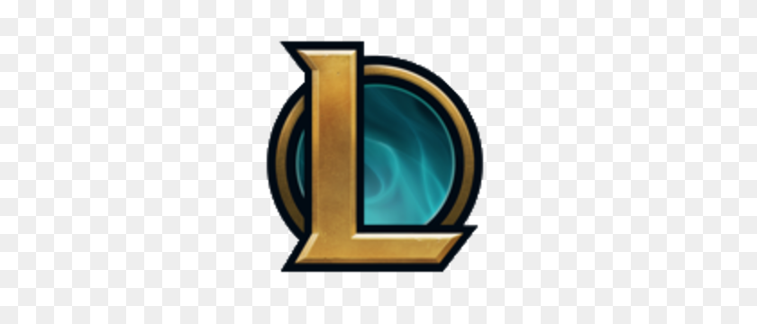
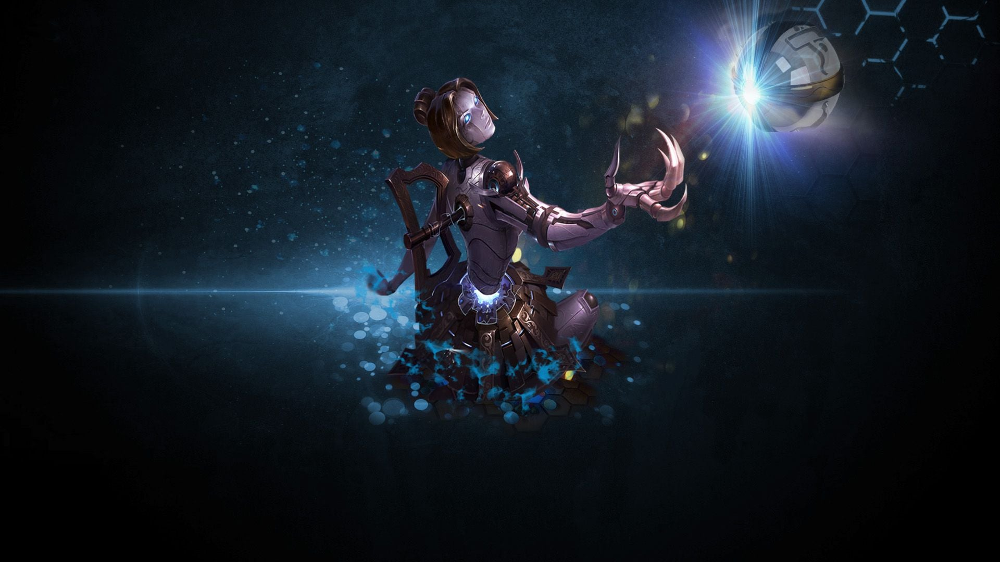

Dangerous, yet disarmingly precocious, Annie is a child mage with immense pyromantic power.
Even in the shadows of the mountains north of Noxus, she is a magical outlier.

She has no clue as to the history of her vastayan tribe—or their place among the rest—save for the twin gemstones she has worn her entire life.
In fact, her earliest memories are of running with icefoxes in the northern reaches of Shon-Xan. Though she knew she was not one of them,
they clearly saw her as something of a kindred spirit, and came to accept her within the pack.

Once a curious girl of flesh and blood, Orianna is now a technological marvel comprised entirely of clockwork.
She became gravely ill after an accident in the lower districts of Zaun, and her failing body had to be replaced with exquisite artifice, piece by piece.